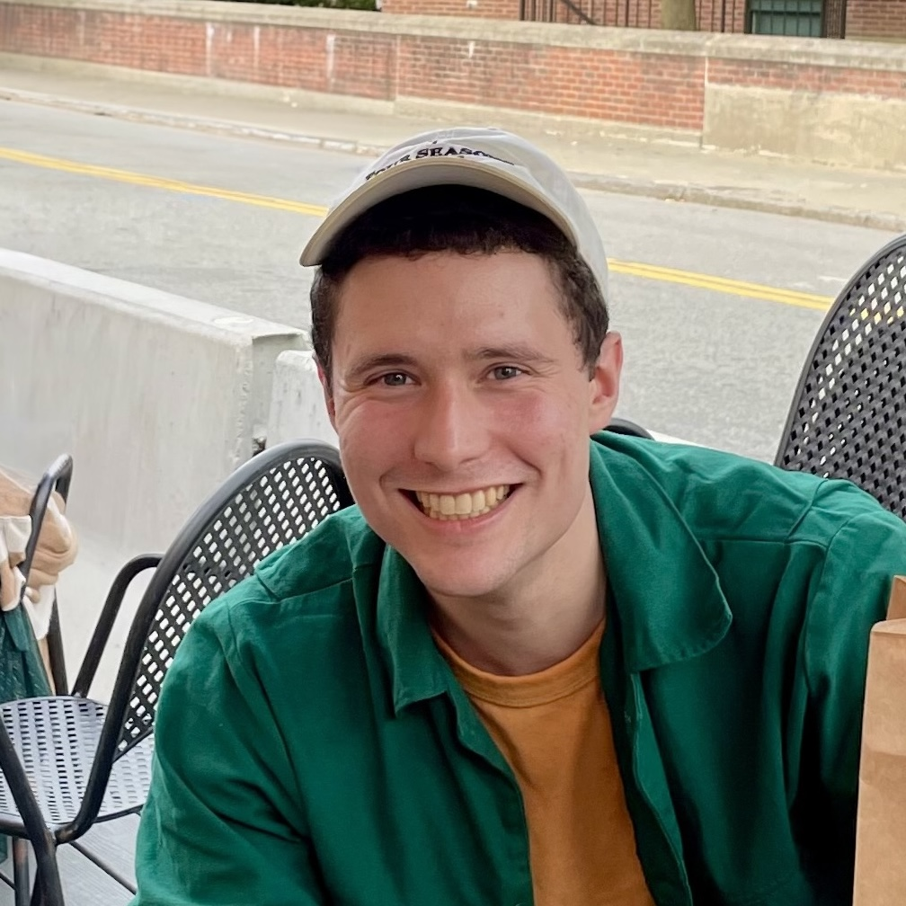

|  |
Logan EngstromEmail: engstrom@mit.eduGoogle Scholar: here CV/Resume: here GitHub: @lengstrom |
I am a PhD student at MIT EECS advised by Aleksander Mądry and funded by a Google PhD Fellowship. I am most interested in understanding the role of data in machine learning.
I went to MIT for undergrad and grew up in Massachusetts. Outside of research, I contribute to open source and play pickup soccer.
Andrew Ilyas, Sam Park, Logan Engstrom, Guillaume LeClerc, Aleksander Madry. Datamodels: Predicting Predictions from Training Data. ICML 2022.
Hadi Salman, Andrew Ilyas, Logan Engstrom, Sai Vemprala, Aleksander Madry, Ashish Kapoor. Unadversarial Examples: Designing Objects for Robust Vision. NeurIPS 2021.
Kai Xiao, Logan Engstrom, Andrew Ilyas, and Aleksander Madry. Noise or signal: The role of image backgrounds in object recognition. ICLR 2021.
Hadi Salman, Andrew Ilyas, Logan Engstrom, Ashish Kapoor, Aleksander Madry. Do Adversarially Robust ImageNet Models Transfer Better?. NeurIPS 2020 Oral Presentation.
Logan Engstrom, Andrew Ilyas, Shibani Santurkar, Dimitris Tsipras, Jacob Steinhardt, and Aleksander Mądry. Identifying Statistical Bias in Dataset Replication. ICML 2020.
Dimitris Tsipras, Shibani Santurkar, Logan Engstrom, Andrew Ilyas, and Aleksander Madry. From imagenet to image classification: Contextualizing progress on benchmarks. ICML 2021.
Logan Engstrom, Andrew Ilyas, Shibani Santurkar, Dimitris Tsipras, Firdaus Janoos, Larry Rudolph, and Aleksander Mądry. Implementation Matters in Deep RL: A Case Study on PPO and TRPO. ICLR 2020 Oral Presentation.
Andrew Ilyas, Logan Engstrom, Shibani Santurkar, Dimitris Tsipras, Firdaus Janoos, Larry Rudolph, and Aleksander Mądry. A Closer Look at Deep Policy Gradients. ICLR 2020 Oral Presentation.
Andrew Ilyas, Shibani Santurkar, Dimitris Tsipras, Logan Engstrom, Brandon Tran, and Aleksander Madry. Adversarial examples are not bugs, they are features. NeurIPS 2019 Spotlight Presentation.
Shibani Santurkar, Dimitris Tsipras, Brandon Tran, Andrew Ilyas, Logan Engstrom, and Aleksander Madry. Computer vision with a single (robust) classifier.. NeurIPS 2019.
Dimitris Tsipras, Shibani Santurkar, Logan Engstrom, Alexander Turner, and Aleksander Mądry. Robustness May Be at Odds with Accuracy. ICLR 2019.
Andrew Ilyas, Logan Engstrom, Ludwig Schmidt, and Aleksander Mądry. Prior Convictions: Black-Box Adversarial Attacks with Bandits and Priors. ICLR 2019.
Logan Engstrom, Brandon Tran, Dimitris Tsipras, Ludwig Schmidt, and Aleksander Mądry. A Rotation and a Translation Suffice: Fooling CNNs with Simple Transformations. ICML 2019.
Logan Engstrom, Andrew Ilyas, and Anish Athalye. Evaluating and Understanding the Robustness of Adversarial Logit Pairing. NIPS 2018 Machine Learning and Computer Security Workshop.
Andrew Ilyas, Logan Engstrom, Anish Athalye, and Jessy Lin. Black-box Adversarial Attacks with Limited Queries and Information. ICML 2018.
Anish Athalye, Logan Engstrom, Andrew Ilyas, and Kevin Kwok. Synthesizing Robust Adversarial Examples. ICML 2018, Demo at NeurIPS 2017 Machine Learning and Computer Security Workshop.
Daniel Kang, Richard Sherwood, Amira Barkal, Tatsunori Hashimoto, Logan Engstrom, and David Gifford. DNase-capture Reveals Differential Transcription Factor Binding modalities. PloS one, 2017.
Logan Engstrom, Axel Feldmann, and Aleksander Madry. DsDm: Dataset Selection with Datamodels. 2024.
Josh Vendrow, Saachi Jain, Logan Engstrom, and Aleksander Madry. Dataset interfaces: Diagnosing model failures using controllable counterfactual generation. 2023.
Hadi Salman, Saachi Jain, Andrew Ilyas, Logan Engstrom, Eric Wong, and Aleksander Madry. When does Bias Transfer in Transfer Learning?. 2022.
Logan Engstrom, Andrew Ilyas, Shibani Santurkar, Dimitris Tsipras, Brandon Tran, and Aleksander Madry. Learning perceptually-aligned representations via adversarial robustness. 2019.